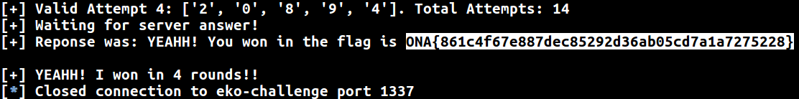

Guess my number
Description
- Category: Programming
- Points: 250/ 500
- Goal: Fun, coding and a little bit about probabilties.
Statement
Let's play a game :). I will pick a number of 5 digits without telling you which one it is. You'll have to guess it in 4 or less attempts. Each attempt you make will have answer. This answer will be two numbers: X Y
X is the amount of good digits Y is the amount of regular digits.
A good digit means that you have correctly guessed the position of a digit. A regular digit means that a digit of your guess is inside the number that was chosen but is not in the correct place.
For example: If the number chosen is 91246 and your attempt is 12345, the answer will be: 1 2. Why? 1 good because the digit 4 is inside the number and also in the correct place 2 regulars because the digits 1 and 2 are in the number, but in diffrent positions than the ones attempted.
Good luck !
===
Juguemos un juego :) Voy a elegir un número de 5 cifras sin decírte cual es. Vos vas a tener que adivinarlo en 4 o menos intentos. Cada intento tendrá una respuesta. Dicha respuesta estará compuesta por dos números: X Y
X será la cantidad de dígitos que están bien Y será la cantidad de dígitos que están regular
Por ejemplo: Si el número elegido es 91246 y tu intento es 12345, la respuesta será: 1 2. ¿Por qué? 1 bien porque el dígito 4 está dentro del número elegido y además en la posición correcta. 2 regulares porque los dígitos 1 y 2 están dentro del número pero en posiciones incorrectas.
Buena suerte!
nc 198.211.123.92 1337
File
This was hosted in a particular server which may not be available for ever. Therefore, here is the actual server-side code.
Solution
I used to play this game when I was younger and I always found it very funny. The idea here wasn't to hack anything but rather create a real solver for this game, which shouldn't take too much time.
The server had some constraints like:
- The socket has 10 seconds of timeout
- You cannot have more than 10 connections from the same IP
- You have only 4 attempts to guess the number, otherwise the connection is closed.
- Each time a new connection is performed, a new random number of 5 digits is selected.
- Each time an attempt was submitted, the server will perform a 5 seconds sleep.
- Maximun amount of valid/invalid attempts is 100!
My idea was to force as much as possible, to develop their own solvers. Trying to bypass all of these constraints.
There is not much to say in this challenge but some tricks that I thought at the moment of solving it:
- Do to the timeout is 10 seconds if you have to process something that may take to more than that, you can just send an "invalid format" message. Therefore you will not waste a valid attempt one, but you will be "refreshing" the timeout. However, be you should do this carefully because you have also a limitation of 100 attempts either valid or invalid.
- Your solution won't guarantee you to always guess the number in 4 or less attempts. But the probability in answering correctly in less than 100 connections with a naive solver, should be high enough.
- You can split this in 10 processes (10 different connections at a time) and therefore speed up your chances of winning.
Here is the solver I've developed.
Finally the flag was:
ONA{861c4f67e887dec85292d36ab05cd7a1a7275228}
